This article provides a discussion exploring the concept of image rotation as a geometric transformation. In addition to conventional image rotation this article illustrates the concept of individual colour channel rotation.
Daisy: Rotate Red 0o, Green 10o, Blue 20o
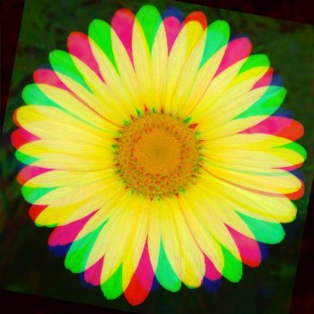
There are no special requirements or instructions for building the sample source code.
A Sample Application has been included in the sample source code that accompanies this article. The sample application serves as an implementation of the concepts discussed throughout this article. Concepts can be easily tested and replicated using the sample application.
Daisy: Rotate Red 15o, Green 5o, Blue 10o
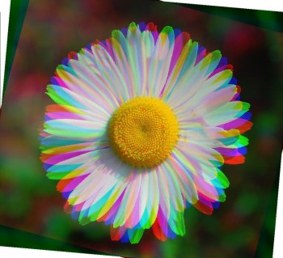
When using the sample application users are able to load source/input images from the local file system by clicking the Load Image button. Required user input via the user interface can be found in the form of three numeric up/down controls labelled Blue, Green and Red respectively. Each control represents the degree to which the related colour component should be rotated. Possible input values range from –360 to 360. Positive values result in clockwise rotation, whereas negative values result in counter clockwise rotation. The sample application enables users to save result images to the local file system by clicking the Save Image button.
The following image is a screenshot of the Image Transform Rotate sample application in action:
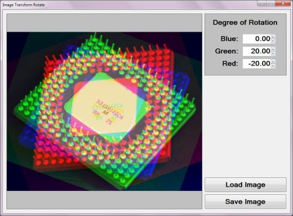
A rotational transformation applied to an image from a theoretical point of view is based in Transformation Geometry. From Wikipedia we learn the following definition:
In mathematics, transformation geometry (or transformational geometry) is the name of a mathematical and pedagogic approach to the study of geometry by focusing on groups of geometric transformations, and the properties of figures that are invariant under them. It is opposed to the classical synthetic geometry approach of Euclidean geometry, that focus on geometric constructions.
Rose: Rotate Red –20o, Green 0o, Blue 20o
In this article image rotation is implemented through applying a set rotation transform algorithm to the coordinates of each pixel forming part of a source/input image. In the corresponding result image the calculated rotated pixel coordinates in terms of colour channel values will be assigned to the colour channel values of the original pixel.
The algorithms implemented when calculating a pixel’s rotated coordinates can be expressed as follows:
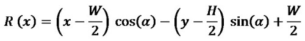
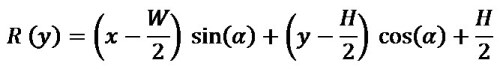
Symbols/variables contained in the algorithms:
Butterfly: Rotate Red 10o, Green 0o, Blue 0o
In order to apply a rotation transformation each pixel forming part of the source/input image should be iterated. The algorithms expressed above should be applied to each pixel.
The pixel coordinates located at exactly the middle of an image can be calculated through dividing the image width with a factor of two in regards to the X-coordinate. The Y-coordinate can be calculated through dividing the image height also with a factor of two. The algorithms calculate the coordinates of the image middle pixel and implements the coordinates as offsets. Implementing the pixel offsets results in images being rotated around the image’s middle, as opposed to the the top left pixel (0,0).
This article and the associated sample source code extends the concept of traditional rotation through implementing rotation on a per colour channel basis. Through user input the individual degree of rotation can be specified for each colour channel, namely Red, Green and Blue. Functionality has been implemented allowing each colour channel to be rotated to a different degree. In essence the algorithms described above have to be implemented three times per pixel iterated.
Daisy: Rotate Red 30o, Green 0o, Blue 180o
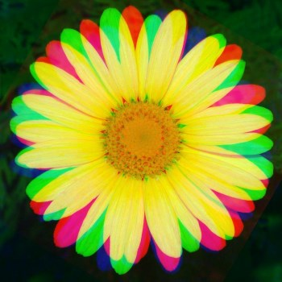
The sample source code implements a rotation transformation through the definition of two extension methods: RotateXY and RotateImage.
The RotateXY extension method targets the Point structure. This method serves as an encapsulation of the logic behind calculating rotating coordinates at a specified angle. The practical C# code implementation of the algorithms discussed in the previous section can be found within this method. The definition as follows:
public static Point RotateXY(this Point source, double degrees,
int offsetX, int offsetY)
{
Point result = new Point();
result.X = (int)(Math.Round((source.X - offsetX) *
Math.Cos(degrees) - (source.Y - offsetY) *
Math.Sin(degrees))) + offsetX;
result.Y = (int)(Math.Round((source.X - offsetX) *
Math.Sin(degrees) + (source.Y - offsetY) *
Math.Cos(degrees))) + offsetY;
return result;
}
public static Point RotateXY(this Point source, double degrees, int offsetX, int offsetY) { Point result = new Point(); result.X = (int)(Math.Round((source.X - offsetX) * Math.Cos(degrees) - (source.Y - offsetY) * Math.Sin(degrees))) + offsetX; result.Y = (int)(Math.Round((source.X - offsetX) * Math.Sin(degrees) + (source.Y - offsetY) * Math.Cos(degrees))) + offsetY; return result; }
Rose: Rotate Red –60o, Green 0o, Blue 60o
The RotateImage extension method targets the Bitmap class. This method expects three rotation degree/angle values, each corresponding to a colour channel. Positive degrees result in clockwise rotation and negative values result in counter clockwise rotation. The definition as follows:
public static Bitmap RotateImage(this Bitmap sourceBitmap,
double degreesBlue,
double degreesGreen,
double degreesRed)
{
BitmapData sourceData =
sourceBitmap.LockBits(new Rectangle(0, 0,
sourceBitmap.Width, sourceBitmap.Height),
ImageLockMode.ReadOnly,
PixelFormat.Format32bppArgb);
byte[] pixelBuffer = new byte[sourceData.Stride *
sourceData.Height];
byte[] resultBuffer = new byte[sourceData.Stride *
sourceData.Height];
Marshal.Copy(sourceData.Scan0, pixelBuffer, 0,
pixelBuffer.Length);
sourceBitmap.UnlockBits(sourceData);
//Convert to Radians
degreesBlue = degreesBlue * Math.PI / 180.0;
degreesGreen = degreesGreen * Math.PI / 180.0;
degreesRed = degreesRed * Math.PI / 180.0;
//Calculate Offset in order to rotate on image middle
int xOffset = (int )(sourceBitmap.Width / 2.0);
int yOffset = (int )(sourceBitmap.Height / 2.0);
int sourceXY = 0;
int resultXY = 0;
Point sourcePoint = new Point();
Point resultPoint = new Point();
Rectangle imageBounds = new Rectangle(0, 0,
sourceBitmap.Width,
sourceBitmap.Height);
for (int row = 0; row < sourceBitmap.Height; row++)
{
for (int col = 0; col < sourceBitmap.Width; col++)
{
sourceXY = row * sourceData.Stride + col * 4;
sourcePoint.X = col;
sourcePoint.Y = row;
if (sourceXY >= 0 && sourceXY + 3 < pixelBuffer.Length)
{
//Calculate Blue Rotation
resultPoint = sourcePoint.RotateXY(degreesBlue,
xOffset, yOffset);
resultXY = (int)(Math.Round(
(resultPoint.Y * sourceData.Stride) +
(resultPoint.X * 4.0)));
if (imageBounds.Contains(resultPoint) &&
resultXY >= 0)
{
if (resultXY + 6 < resultBuffer.Length)
{
resultBuffer[resultXY + 4] =
pixelBuffer[sourceXY];
resultBuffer[resultXY + 7] = 255;
}
if (resultXY + 3 < resultBuffer.Length)
{
resultBuffer[resultXY] =
pixelBuffer[sourceXY];
resultBuffer[resultXY + 3] = 255;
}
}
//Calculate Green Rotation
resultPoint = sourcePoint.RotateXY(degreesGreen,
xOffset, yOffset);
resultXY = (int)(Math.Round(
(resultPoint.Y * sourceData.Stride) +
(resultPoint.X * 4.0)));
if (imageBounds.Contains(resultPoint) && resultXY >= 0)
{
if (resultXY + 6 < resultBuffer.Length)
{
resultBuffer[resultXY + 5] =
pixelBuffer[sourceXY + 1];
resultBuffer[resultXY + 7] = 255;
}
if (resultXY + 3 < resultBuffer.Length)
{
resultBuffer[resultXY + 1] =
pixelBuffer[sourceXY + 1];
resultBuffer[resultXY + 3] = 255;
}
}
//Calculate Red Rotation
resultPoint = sourcePoint.RotateXY(degreesRed,
xOffset, yOffset);
resultXY = (int)(Math.Round(
(resultPoint.Y * sourceData.Stride) +
(resultPoint.X * 4.0)));
if (imageBounds.Contains(resultPoint) && resultXY >= 0)
{
if (resultXY + 6 < resultBuffer.Length)
{
resultBuffer[resultXY + 6] =
pixelBuffer[sourceXY + 2];
resultBuffer[resultXY + 7] = 255;
}
if (resultXY + 3 < resultBuffer.Length)
{
resultBuffer[resultXY + 2] =
pixelBuffer[sourceXY + 2];
resultBuffer[resultXY + 3] = 255;
}
}
}
}
}
Bitmap resultBitmap = new Bitmap(sourceBitmap.Width,
sourceBitmap.Height);
BitmapData resultData =
resultBitmap.LockBits(new Rectangle (0, 0,
resultBitmap.Width, resultBitmap.Height),
ImageLockMode.WriteOnly,
PixelFormat.Format32bppArgb);
Marshal.Copy(resultBuffer, 0, resultData.Scan0,
resultBuffer.Length);
resultBitmap.UnlockBits(resultData);
return resultBitmap;
}
public static Bitmap RotateImage(this Bitmap sourceBitmap, double degreesBlue, double degreesGreen, double degreesRed) { BitmapData sourceData = sourceBitmap.LockBits(new Rectangle(0, 0, sourceBitmap.Width, sourceBitmap.Height), ImageLockMode.ReadOnly, PixelFormat.Format32bppArgb); byte[] pixelBuffer = new byte[sourceData.Stride * sourceData.Height]; byte[] resultBuffer = new byte[sourceData.Stride * sourceData.Height]; Marshal.Copy(sourceData.Scan0, pixelBuffer, 0, pixelBuffer.Length); sourceBitmap.UnlockBits(sourceData); //Convert to Radians degreesBlue = degreesBlue * Math.PI / 180.0; degreesGreen = degreesGreen * Math.PI / 180.0; degreesRed = degreesRed * Math.PI / 180.0; //Calculate Offset in order to rotate on image middle int xOffset = (int )(sourceBitmap.Width / 2.0); int yOffset = (int )(sourceBitmap.Height / 2.0); int sourceXY = 0; int resultXY = 0; Point sourcePoint = new Point(); Point resultPoint = new Point(); Rectangle imageBounds = new Rectangle(0, 0, sourceBitmap.Width, sourceBitmap.Height); for (int row = 0; row < sourceBitmap.Height; row++) { for (int col = 0; col < sourceBitmap.Width; col++) { sourceXY = row * sourceData.Stride + col * 4; sourcePoint.X = col; sourcePoint.Y = row; if (sourceXY >= 0 && sourceXY + 3 < pixelBuffer.Length) { //Calculate Blue Rotation resultPoint = sourcePoint.RotateXY(degreesBlue, xOffset, yOffset); resultXY = (int)(Math.Round( (resultPoint.Y * sourceData.Stride) + (resultPoint.X * 4.0))); if (imageBounds.Contains(resultPoint) && resultXY >= 0) { if (resultXY + 6 < resultBuffer.Length) { resultBuffer[resultXY + 4] = pixelBuffer[sourceXY]; resultBuffer[resultXY + 7] = 255; } if (resultXY + 3 < resultBuffer.Length) { resultBuffer[resultXY] = pixelBuffer[sourceXY]; resultBuffer[resultXY + 3] = 255; } } //Calculate Green Rotation resultPoint = sourcePoint.RotateXY(degreesGreen, xOffset, yOffset); resultXY = (int)(Math.Round( (resultPoint.Y * sourceData.Stride) + (resultPoint.X * 4.0))); if (imageBounds.Contains(resultPoint) && resultXY >= 0) { if (resultXY + 6 < resultBuffer.Length) { resultBuffer[resultXY + 5] = pixelBuffer[sourceXY + 1]; resultBuffer[resultXY + 7] = 255; } if (resultXY + 3 < resultBuffer.Length) { resultBuffer[resultXY + 1] = pixelBuffer[sourceXY + 1]; resultBuffer[resultXY + 3] = 255; } } //Calculate Red Rotation resultPoint = sourcePoint.RotateXY(degreesRed, xOffset, yOffset); resultXY = (int)(Math.Round( (resultPoint.Y * sourceData.Stride) + (resultPoint.X * 4.0))); if (imageBounds.Contains(resultPoint) && resultXY >= 0) { if (resultXY + 6 < resultBuffer.Length) { resultBuffer[resultXY + 6] = pixelBuffer[sourceXY + 2]; resultBuffer[resultXY + 7] = 255; } if (resultXY + 3 < resultBuffer.Length) { resultBuffer[resultXY + 2] = pixelBuffer[sourceXY + 2]; resultBuffer[resultXY + 3] = 255; } } } } } Bitmap resultBitmap = new Bitmap(sourceBitmap.Width, sourceBitmap.Height); BitmapData resultData = resultBitmap.LockBits(new Rectangle (0, 0, resultBitmap.Width, resultBitmap.Height), ImageLockMode.WriteOnly, PixelFormat.Format32bppArgb); Marshal.Copy(resultBuffer, 0, resultData.Scan0, resultBuffer.Length); resultBitmap.UnlockBits(resultData); return resultBitmap; }
Daisy: Rotate Red 15o, Green 5o, Blue 5o
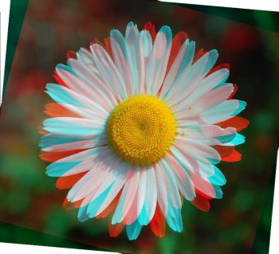
This article features a number of sample images. All featured images have been licensed allowing for reproduction.
The sample images featuring an image of a yellow daisy is licensed under the Creative Commons Attribution-Share Alike 2.5 Generic license and can be downloaded from Wikimedia.org.
The sample images featuring an image of a white daisy is licensed under the Creative Commons Attribution-Share Alike 3.0 Unported license and can be downloaded from Wikipedia.
The sample images featuring an image of a CPU is licensed under the Creative Commons Attribution-Share Alike 2.0 Generic license. The original author is credited as Andrew Dunn. The original image can be downloaded from Wikipedia.
The sample images featuring an image of a rose is licensed under the Creative Commons Attribution-Share Alike 3.0 Unported, 2.5 Generic, 2.0 Generic and 1.0 Generic license. The original image can be downloaded from Wikipedia.
The sample images featuring an image of a butterfly is licensed under the Creative Commons Attribution 3.0 Unported license and can be downloaded from Wikimedia.org.
The Original Image
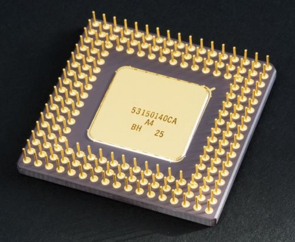
CPU: Rotate Red 90o, Green 0o, Blue –30o
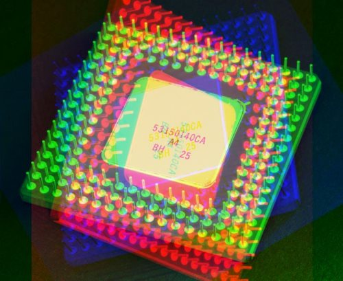
CPU: Rotate Red 0o, Green 10o, Blue 0o
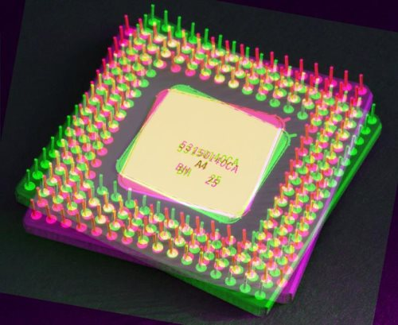
CPU: Rotate Red –4o, Green 4o, Blue 6o
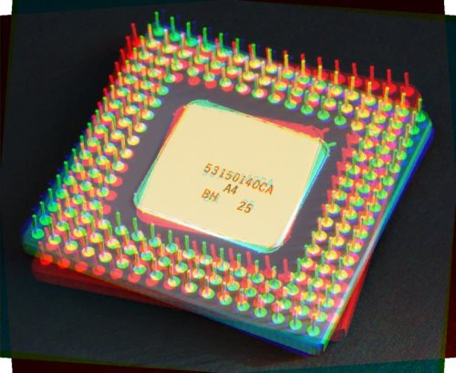
CPU: Rotate Red 10o, Green 0o, Blue 0o
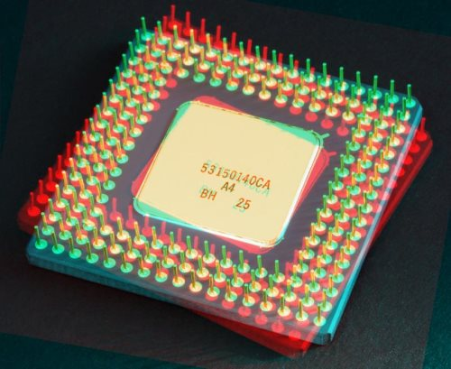
CPU: Rotate Red 10o, Green –5o, Blue 0o
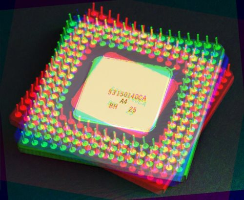
CPU: Rotate Red 10o, Green 0o, Blue 10o
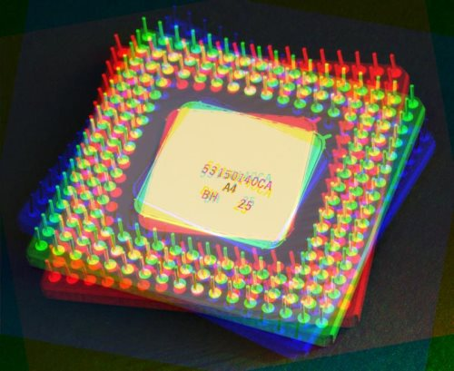
CPU: Rotate Red –10o, Green 10o, Blue 0o
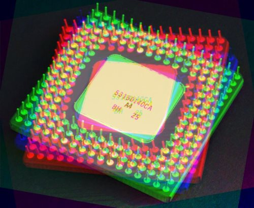
CPU: Rotate Red 30o, Green –30o, Blue 0o
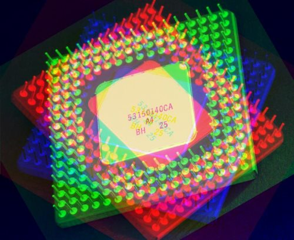
CPU: Rotate Red 40o, Green 20o, Blue 0o
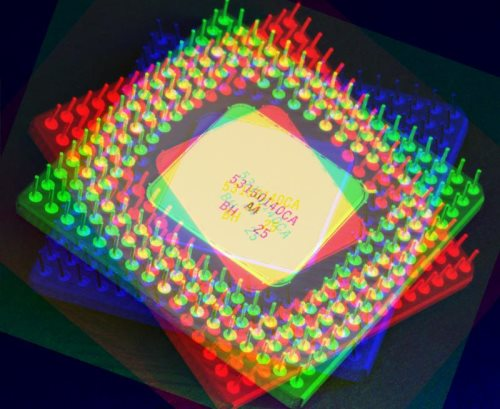
CPU: Rotate Red 60o, Green 20o, Blue 0o
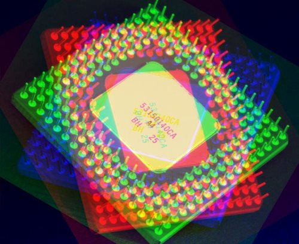
This article is based on an article originally posted on my blog: http://softwarebydefault.com/2013/06/16/image-transform-rotate/ If you have any questions/comments please feel free to make use of the Q&A section on this page, also please remember to rate this article.
.jpg){kind=link}
{kind=link}
{kind=link}
{kind=link}
{kind=link}